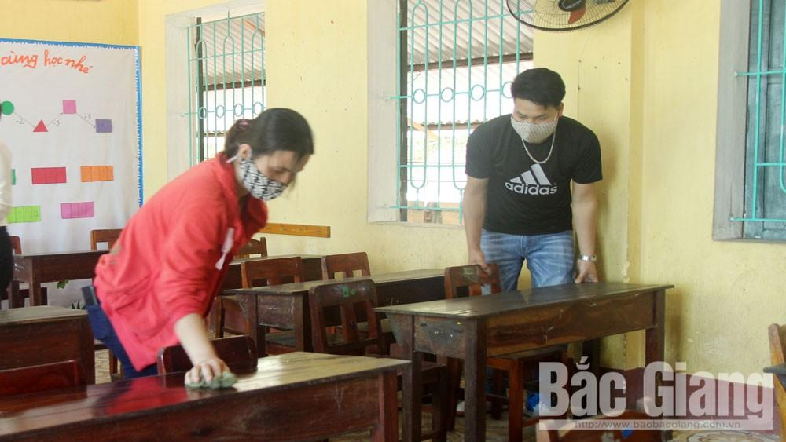

Sớm ổn định nền nếp học tập, bảo đảm an toàn phòng dịch
(BGĐT) - Cùng với nhiều tỉnh, TP trong toàn quốc, từ ngày 4/5, hàng vạn học sinh, sinh viên Bắc Giang trở lại trường sau thời gian nghỉ dài để phòng, chống dịch Covid-19.
Chú trọng phòng ngừa dịch bệnh
Cách đây một tuần, anh Dương Văn Trạm, thôn Vân Chung, xã Lam Cốt (Tân Yên) đã mua một hộp khẩu trang, một chai nhỏ dung dịch sát khuẩn và chiếc khăn lau tay, bình nước cho con trai đang học lớp 5 ở trường tiểu học của xã. Anh chia sẻ: "Mấy ngày qua, gia đình tôi thường xuyên nhận được thông báo từ giáo viên chủ nhiệm hướng dẫn chuẩn bị các vật dụng thiết yếu, kiểm tra thân nhiệt cho con trước khi đi học. Hy vọng rằng việc chủ động phòng dịch của nhà trường và gia đình sẽ góp phần ngăn ngừa dịch bệnh, bảo đảm an toàn cho học sinh".
Ngày 2/5, nhân viên y tế Trường Tiểu học Tân Mỹ (TP Bắc Giang) tập huấn cho giáo viên cách kiểm tra thân nhiệt, sát khuẩn tay. |
{kind=link}
Xác định công tác sàng lọc, kịp thời phát hiện học sinh bị ốm, sốt, nghi ngờ nhiễm bệnh trước khi đến trường rất quan trọng, Sở Giáo dục và Đào tạo (GD&ĐT) yêu cầu giáo viên chủ nhiệm tăng cường nắm bắt tình hình sức khỏe học sinh; những trường hợp sốt, ho, ốm thì yêu cầu phụ huynh cho các em nghỉ tại nhà.
Tại Việt Yên, các cơ sở giáo dục gửi phiếu khai báo thân nhiệt hằng ngày về gia đình để phụ huynh điền kết quả kiểm tra sức khỏe con em mình sau đó nộp lại cho giáo viên chủ nhiệm. Ngoài ra, nhiều địa phương cũng đề nghị các trạm y tế xã, thị trấn hỗ trợ giáo viên, nhân viên y tế một số trường có đông học sinh.
Ông Phạm Văn Hà, Trưởng phòng GD&ĐT Hiệp Hòa cho biết: Tính đến ngày 2/5, báo cáo từ các nhà trường cho thấy đa số học sinh sức khỏe bảo đảm, không có trường hợp nào thuộc diện cách ly, các em đều háo hức trở lại trường học tập.
Để phòng dịch, các cơ sở giáo dục đã xây dựng kế hoạch tổ chức học hai ca nhằm giảm mật độ học sinh ở trường. Đơn cử như Trường Tiểu học Ngô Sĩ Liên (TP Bắc Giang) có hơn 1,8 nghìn học sinh, 46 lớp. Hiện nhà trường đã chia các lớp thành hai ca; thời gian vào lớp, tan học giữa các khối lệch nhau từ 5-10 phút. Lịch đón, trả học sinh từng khối cũng được nhà trường thông báo đến phụ huynh để cùng phối hợp thực hiện, tránh trường hợp học sinh đến trường quá sớm hoặc muộn giờ.
Bám sát kế hoạch dạy và học
Từ ngày 4/5, Bắc Giang có gần 330 nghìn học sinh phổ thông, sinh viên các trường trực thuộc Sở GD&ĐT và hàng nghìn sinh viên các trường cao đẳng, đại học trên địa bàn tỉnh đi học trở lại. Đó là niềm vui với học sinh và thầy cô. Tuy nhiên một số trường cũng lo lắng về tình trạng học sinh chểnh mảng, thiếu tập trung sau thời gian nghỉ học kéo dài.
|  |
Giáo viên Trường Tiểu học Đồng Lạc (Yên Thế) kê dọn bàn ghế chuẩn bị đón học sinh đi học trở lại. |
{kind=link}
Theo cô Nguyễn Thị Thanh Thiết, Hiệu trưởng Trường THCS Việt Tiến (Việt Yên), nhà trường yêu cầu giáo viên chủ nhiệm quan tâm đến việc ổn định nền nếp học tập, chuyên cần, tổ chức giờ chào cờ tại lớp nhằm nhắc nhở các em có thái độ học tập nghiêm túc, nhất là với học sinh lớp 9 chuẩn bị thi vào lớp 10 THPT năm học 2020-2021. Hiện tại, giáo viên các lớp đã bám sát khung chương trình của Sở GD&ĐT để soạn giáo án theo yêu cầu.
Theo kế hoạch, năm học sẽ kết thúc trước ngày 15/7. Để bảo đảm tiến độ giảng dạy và học tập, thầy giáo Nguyễn Việt Nam, giáo viên Hóa, Trường THPT Tân Yên số 1 cho biết: “Trong tuần đầu tiên tôi sẽ dành thời gian giúp các em củng cố lại kiến thức cũ; sau đó tập trung dạy kiến thức mới, tăng cường luyện kỹ năng làm bài theo chủ đề, dạng bài tập”.
Em Nguyễn Thị Bình, học sinh lớp 12, Trường THPT Tân Yên số 1 chia sẻ: “Thời gian qua, dù được học trực tuyến tại nhà nhưng em vẫn muốn được đến trường để được trực tiếp thảo luận, trao đổi kiến thức với thầy cô và các bạn”.
Từ ngày 4/5, Bắc Giang có gần 330 nghìn học sinh phổ thông, sinh viên các trường trực thuộc Sở GD&ĐT và hàng nghìn sinh viên các trường cao đẳng, đại học trên địa bàn tỉnh đi học trở lại. |
Đánh giá của Sở GD&ĐT, bên cạnh nỗ lực phòng dịch, nhìn chung các nhà trường đã chủ động xây dựng kế hoạch dạy và học bám sát những thay đổi của ngành như: Không kiểm tra, đánh giá đối với nội dung bài học đã tinh giản, không tổ chức các hoạt động ngoại khóa.
Để bảo đảm an toàn cho học sinh khi đến trường, hoàn thành chương trình dạy và học theo kế hoạch, ông Bạch Đăng Khoa, Phó Giám đốc Sở GD&ĐT yêu cầu các nhà trường thực hiện đúng các văn bản hướng dẫn của Bộ Y tế, Chỉ thị của Trung ương, UBND tỉnh; làm tốt công tác sàng lọc, kiểm tra sức khỏe học sinh tại nhà.
Do năm học 2019-2020 sẽ kết thúc muộn hơn so với mọi năm, thời tiết từ tháng 5 bắt đầu nắng nóng nên nhiều trường dự kiến bổ sung thêm thiết bị làm mát.
Như ở Trường Tiểu học Phồn Xương (Yên Thế), cô giáo Hà Thị Thủy, Phó Hiệu trưởng phụ trách cho biết hiện tại 13 lớp học đều có quạt, tuy vậy khi bước vào mùa hè thời tiết sẽ rất nóng bức, nhất là với các em học buổi chiều. Ban giám hiệu dự kiến sau khi ổn định nền nếp sẽ tổ chức họp bàn với phụ huynh giải pháp lắp máy điều hòa hoặc bổ sung quạt mát tại các lớp với tinh thần xã hội hóa, trong đó nhà trường sẽ hỗ trợ tiền điện hàng tháng.